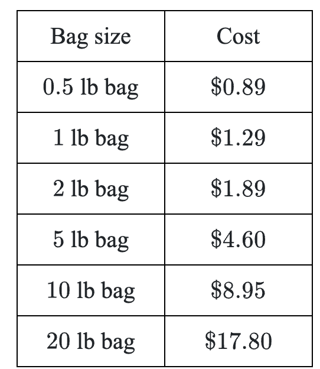
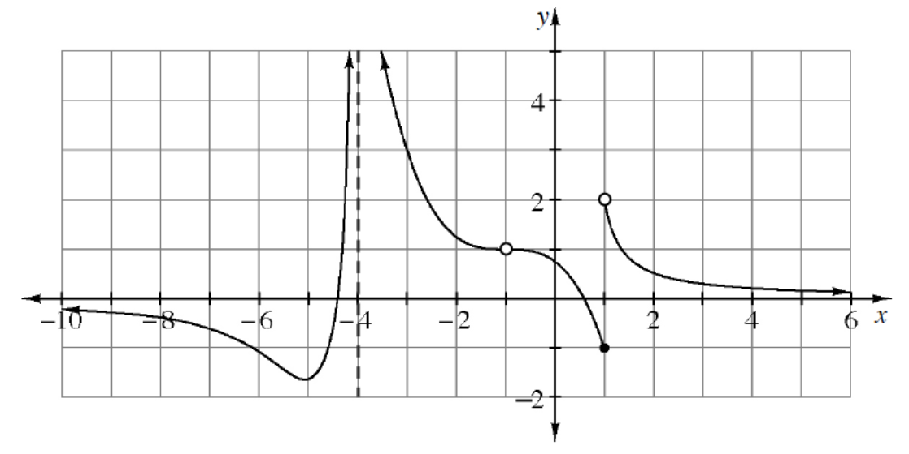
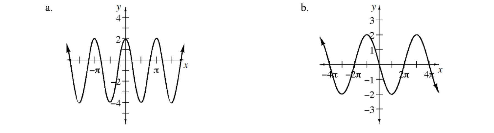

The dew point is the temperature at which the air would be completely saturated with water (\(100\%\) humidity). How can a beaver use the pressure to change the dew point with respect to the change in dew point with respect to the balloon problem, calculate the average rate of change of the dew point with respect to height from \(t=0\) to \(t=360\).
The table shows the prices for various-sized bags of rice offered at a grocery store.

What are the costs per pound for each bag?
The answers for part (a) are average rates of change. What other data point is being used, but not shown, in these rate calculations?
Does the unit price increase or decrease with the size of the bag?
Does the rate change more drastically for smaller sizes or for larger sizes?
Given the graph of \(y=f(x)\) shown below, write at least five limit statements corresponding to this function. The limit statements you write should describe the graph thoroughly so that someone could sketch the general shape of the graph from your limit statements.

Calculate the slope between the points \((3,9)\) and \((3+h,9+6h+h^2)\).
Given the magnitude and direction, express each vector in component form.
\(\|\vec{u}\|=5\) and \(\theta=\frac{\pi}{6}\)
\(\|\vec{u}\|=10\) and \(\theta=\frac{3\pi}{4}\)
\(\|\vec{u}\|=1\) and \(\theta=\frac{5\pi}{4}\)
Solve each of the following equations.
\(e^{\ln(x)+4}=6\)
\(\log_2(x)=\log_2(3x+12)-\log_2(x-1)\)
Write several sentences explaining to someone, who just transferred into the class, how to approximate the area under the curve \(y=x^3+2x+6\) for \(-1\le x\le 3\). Do not actually approximate the area, just explain how to calculate it.
Write an equation for each graph below.
